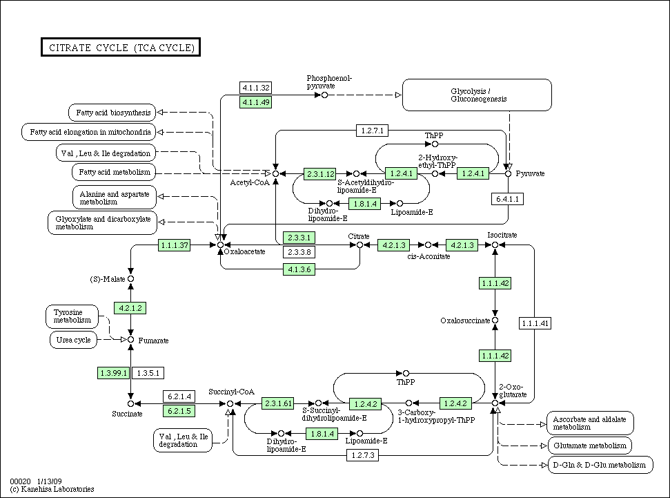
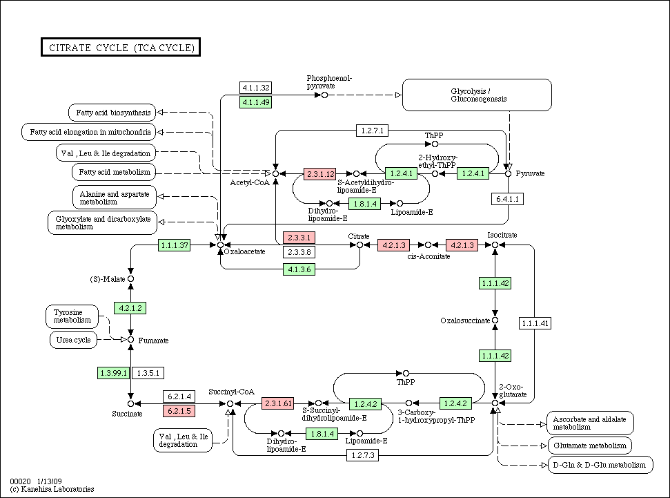
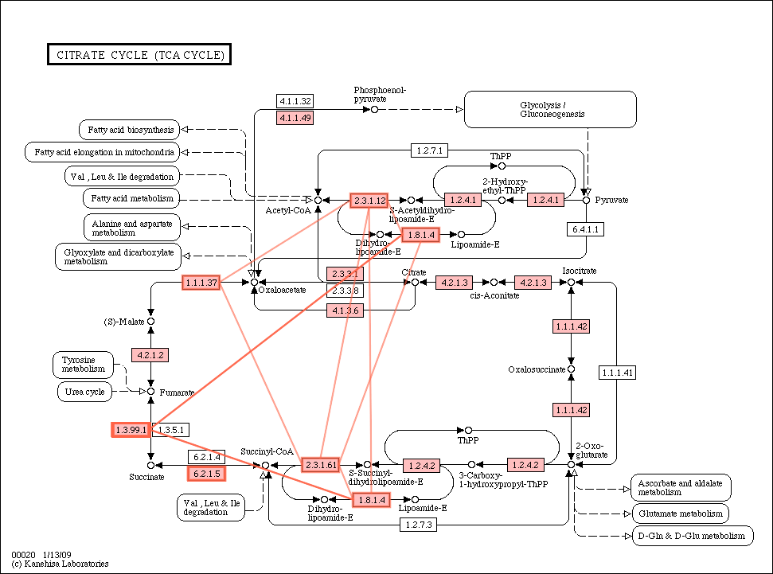

| Version 15 (modified by akinjo, 16 years ago) |
|---|
A DDBJ-KEGG-PDBj workflow: from pathways to protein-protein interactions
- For the details of the project, see DDBJ-KEGG-PDBj.
begin paper
(The following is a draft of a part of a paper to be submitted.)
A DDBJ-KEGG-PDBj workflow: from pathways to protein-protein interactions
The objective of this working group is to examine the potentials and obstacles of web services by implementing a real-life use case. The goal of the workflow is to enumerate possible physical protein-protein interactions among proteins in a biochemical pathway. More specifically, the workflow proceeds as follows. (1) The user provide a KEGG pathway ID. (2) Extract the amino acid sequence of each enzyme in the specified pathway. (3) For each amino acid sequence, run BLAST search against Swiss-Prot database. (4) Construct a phylogenetic profile (a species-by-enzyme matrix) by identifying the top hits for each proteins and each species. (5) For each species in the phylogenetic profile, run BLAST searches for each amino acid sequence against PDB. (6) If two amino acid sequences (of the same species) have homologs in the same PDB entry, they are inferred to be in possible contact, and hence predicted to be an interacting pair.
To implement the workflow outlined above, we have used the SOAP and REST APIs of KEGG ( http://www.genome.jp/kegg/soap/), DDBJ ( http://www.xml.nig.ac.jp/) and PDBj.
end paper
Members
- Yasumasa Shigemoto (WABI/SABI; DDBJ, Japan)
- Akira Kinjo (PDBj, Japan)
- Soichi Ogishima (Tokyo Medical and Dental Univ, Japan)
- Masumi Itoh (Hokkaido Univ)
The objective
Given a KEGG pathway ID of a specific species,
- Identify homologous proteins of the pathway.
- Infer possible protein-protein interactions between components of the homologous pathways.
How?
- Input: KEGG pathway ID
- Get amino acid sequences of all the proteins involved in the given pathway. (KEGG API)
- For each protein sequence, run BLAST against the UniProt (SwissProt / !TrEMBL) database to identify its homologs. (WABI)
- Sort the BLAST results according to species. (a local program)
- At this point, we will have a phylogenetic profile.
- For each BLAST hit (a UniProt entry), run BLAST against PDB. (PDBj SeqNavi API).
- Find physical interactions between different components. (a local program)
- That is, if two (UniProt) sequences are homologous to different chains of the same PDB entry, they are predicted to be in physical contact.
- Output the phylogenetic profile and the predicted species-wise PPI.
An example
- KEGG pathway (TCA cycle in E. coli): path:eco00020 .
- Phylogenetic profile
- The pathway colored according to homologs in Acinetobacter 
- PPI list
- The pathway with PPI edges in Yersinia pestis 
What we learned
- We had to do a significant amount of coding in spite of the wealth of Web services.
- It takes a long time to finish all the flow.
- By actually solving biologically oriented problems, we can identify some typical use cases which might be useful for further development of web services.
- e.g. 1. Given a set of gene names, return a phylogenetic profile.
- e.g. 2. Given a set of blast hits, group them according to their species.
Attachments
-
sp_kegggene_matrix.2.xls
 (59.1 KB) - added by akinjo
16 years ago.
(59.1 KB) - added by akinjo
16 years ago.
a phylogenetic profile
-
Acinetobacter_sp._strain_ADP1_..gif
(55.8 KB) - added by akinjo
16 years ago.
pathway colored by phylogenetic profile
-
Yersinia_pestis.gif
(25.1 KB) - added by akinjo
16 years ago.
PPI
-
eco00020.gif
(15.9 KB) - added by akinjo
16 years ago.
eco00020
-
ppi_by_species.txt
(80.3 KB) - added by akinjo
16 years ago.
ppi list


{kind=link}
{kind=link}
{kind=link}